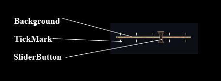

The SliderBar provides an Windows style slider bar control. This Window element is an automated combination of several other window components.
| SliderBar | The SliderBar provides an Windows style slider bar control. |
| Implementation Details | The SliderBar is a combination window element that automates slider-box behavior from a set of more basic window components. |
| XML Definition | This is the SliderBar xml definition. |
| XML Tag | |
| Required Attributes | You need to specify valid values for all of these elements to get the SliderBar to create properly. |
| background | The name of a <HorizontalResizeIMage> definition for the bar background image. |
| tickmark | The name of a DynamicImage definition that contains the texture coorddnates and size for a single tick mark |
| sliderbutton | The name of a Button definition for the slider button |
| numticks | The number of tickmarks to display along the bar. |
| orientation | Changes the internal functions to behave as if the slider bar was oriented horizontally or vertically. |
| locktoticks | Causes the slider bar to only move to values the ticks are located at. |
| Window Callbacks | These are the SliderBar specific callback events. |
| Callbacks | |
| OnSlide | Called when the bar’s position changes. |
| Functions | |
| SliderBarSetDisabledFlag() | Sets if slider is disabled. |
| SliderBarGetDisabledFlag() | Returns if the slider is currently set to disabled. |
| Functions | |
| Functions | |
| SliderBarSetCurrentPosition() | Sets the current position for the slider bar, |
| SliderBarGetCurrentPosition() | Returns the current position for the slider bar, |
The SliderBar is a combination window element that automates slider-box behavior from a set of more basic window components.
The SliderBar is comprised of the following components:

The slider maintains its position as a value betweeen 0.0 (all the way to the left) and 1.0 (all the way to the right). If you wisht to use the slider for other ranges of values, you should do your calculation in your lua script.
This is the SliderBar xml definition.
| XML Tag | |
| Required Attributes | You need to specify valid values for all of these elements to get the SliderBar to create properly. |
| background | The name of a <HorizontalResizeIMage> definition for the bar background image. |
| tickmark | The name of a DynamicImage definition that contains the texture coorddnates and size for a single tick mark |
| sliderbutton | The name of a Button definition for the slider button |
| numticks | The number of tickmarks to display along the bar. |
| orientation | Changes the internal functions to behave as if the slider bar was oriented horizontally or vertically. |
| locktoticks | Causes the slider bar to only move to values the ticks are located at. |
You need to specify valid values for all of these elements to get the SliderBar to create properly.
The name of a <HorizontalResizeIMage> definition for the bar background image.
A string value, which is the name of a valid <HorizontalResizeIMage>.
The name of a DynamicImage definition that contains the texture coorddnates and size for a single tick mark
A string value, which is the name of a valid DynamicImage.
Changes the internal functions to behave as if the slider bar was oriented horizontally or vertically. SliderBars using an inappropriate orientation may render strangely but should function the same.
”horizontal” or “vertical”, substrings of these may or may not function
Causes the slider bar to only move to values the ticks are located at.
”true” or “false”
These are the SliderBar specific callback events.
| Callbacks | |
| OnSlide | Called when the bar’s position changes. |
| Functions | |
| SliderBarSetDisabledFlag() | Sets if slider is disabled. |
| SliderBarGetDisabledFlag() | Returns if the slider is currently set to disabled. |
Called when the bar’s position changes.
SomeSliderBar.OnSlide( curPos )
| curPos | (number) The current slide position. |
Sets if slider is disabled. When disabled, the slider button cannot slide.
| sliderName | (string) The name of the slider. |
| isDisabled. | (boolean) Should the slider be disabled? |
| nil | no return value |
SliderBarSetDisabledFlag("MySlider", false )Returns if the slider is currently set to disabled.
| sliderName | (string) The name of the slider. |
| isDisabled. | (boolean) Is the slider currently disabled? |
local isDisabled = SliderBarSetDisabledFlag("MySlider")| Functions | |
| SliderBarSetCurrentPosition() | Sets the current position for the slider bar, |
| SliderBarGetCurrentPosition() | Returns the current position for the slider bar, |
Sets the current position for the slider bar,
| sliderBarName | (string) The name of the SliderBar. |
| position | (number) The desired position, a value between 0.0 (all the way to the left) and 1.0 (all the way to the right). |
| nil | no return value |
SliderBarSetCurrentPosition("ScenarioMapMenuWindowOpacitySlider", SystemData.Settings.Interface.tacticalMapAlpha)Returns the current position for the slider bar,
| sliderBarName | (string) The name of the SliderBar. |
| position | (number) The current position, a value between 0.0 (all the way to the left) and 1.0 (all the way to the right). |
local value = SliderBarGetCurrentPosition( "ScenarioMapMenuWindowOpacitySlider" )